ろぶーの気になる事 ／ 京都・京丹波 ／ 旅行・グルメ
この記事には楽天トラベルの広告リンクが含まれます。
質志鐘乳洞へドライブひんやり洞窟探検と、古民家きたむらの卵かけご飯
こんにちは、ろぶーです。
今回は、京都府京丹波町の「質志鐘乳洞（しづししょうにゅうどう）」へ出かけてきました。夏に訪れた鍾乳洞の涼しさを楽しんで、帰りは「古民家きたむら」でランチ。洞窟を見て、おいしい卵かけご飯を食べる、そんなドライブの記録です。
夏の体験ですが、これから出かける方や、来年の暑い時期のお出かけ先を探している方にも参考になればうれしいです。冬は休園する期間があるので、後半に営業情報もまとめました。
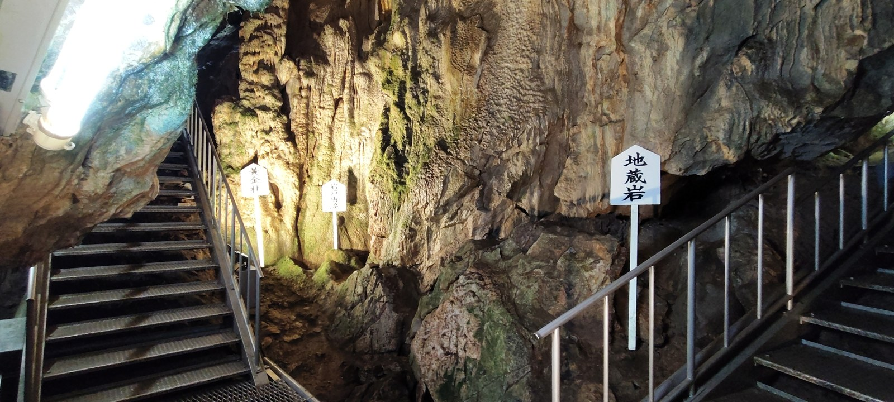
歩道橋を渡って、まずは受付へ
車を停めたら、まず歩道橋の階段を上がって向こう側へ。最初の写真は、鍾乳洞の中ではなく、駐車場から公園へ向かう途中の歩道橋です。
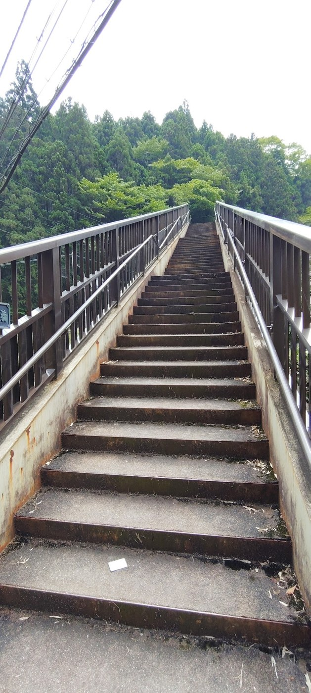
渡りきったところには、ここから先は有料という案内看板がありました。そこから道を進んでいくと事務所があり、こちらで料金を払ってから鍾乳洞へ向かいます。
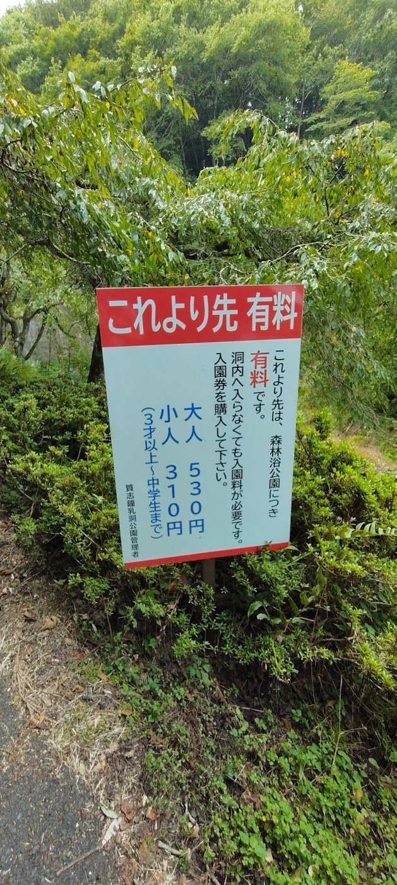
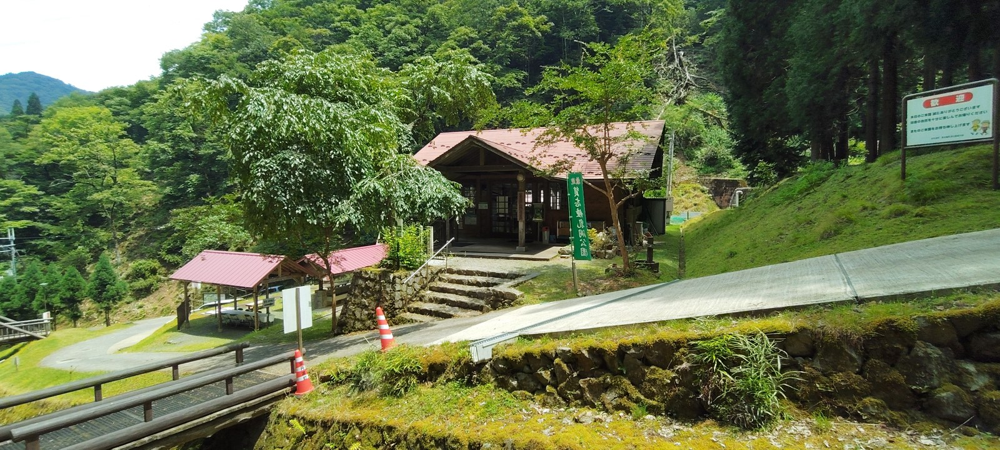
入口には「質志鐘乳洞」の木の看板。緑に囲まれた小さな入口の先に、洞窟が続いています。
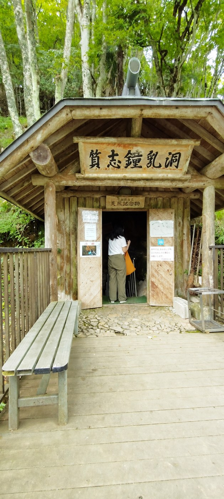
涼しい洞内と、急な階段
暑い季節に訪れる鍾乳洞は、やっぱり涼しくて気持ちがいいですね。質志鐘乳洞は、広い平坦な道を歩くというより、高低差のある洞内を階段で進んでいく場所でした。
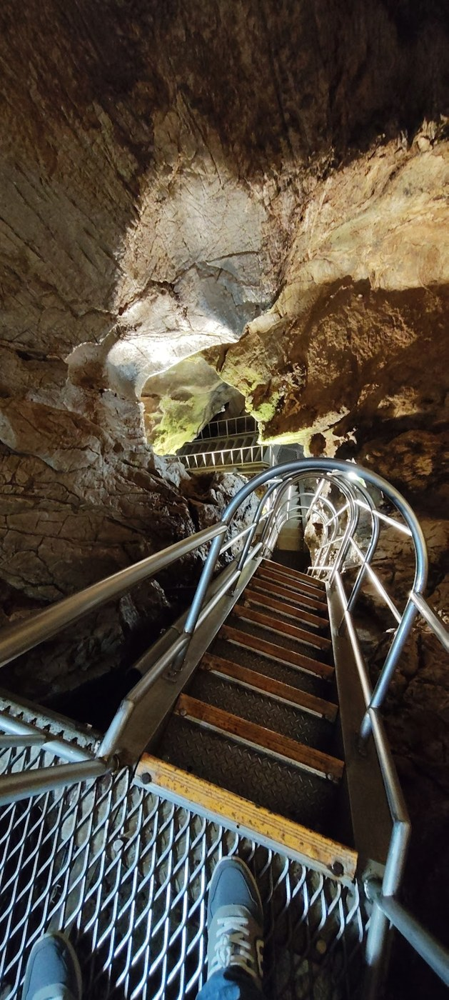
下をのぞくと、階段の急さがよく分かります。足元を確かめながら、ゆっくりと。写真を撮るときも、まず安全に立ち止まれる場所で撮りたいところです。
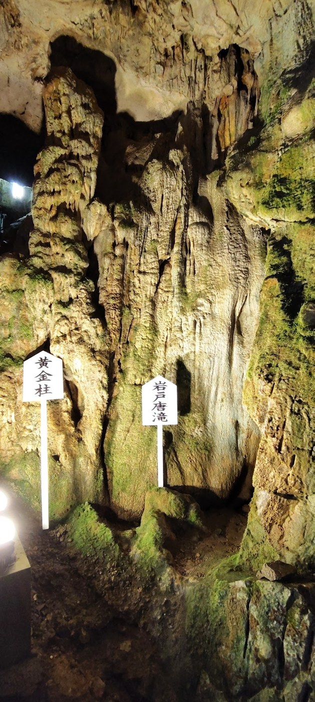
照明に浮かび上がる岩肌には、いろいろな凹凸がありました。手元の写真を見返すと、岩の形だけでなく、細い通路や階段も、この鍾乳洞らしい景色として残っています。
京丹波町の公式案内によると、洞窟は総延長52.5メートル、高低差25.1メートル。京都府唯一の鍾乳洞で、府の天然記念物に指定されています。数字で見ても、高低差の大きい洞窟なのが分かります。
夏はひんやり。冬は入れる？
町の公式案内では、洞内の温度は一年を通して12〜15℃ほど。夏の外気と比べると、涼しく感じるのも納得です。
では、寒い季節なら逆に暖かく感じるのでしょうか。外の気温が洞内より低ければ、そう感じられるかもしれません。ただし、今回の私の体験は夏の訪問で、冬の暖かさを実際に確かめたわけではありません。
- 4〜11月：毎日開園
- 12月・3月：土曜日・日曜日・祝日のみ開園
- 1〜2月：休園
1〜2月は積雪とコウモリの冬眠保護のため休園します。天候による臨時休園もあります。出発前に京丹波町の公式案内をご確認ください。
帰りは古民家きたむらで、卵かけご飯
鍾乳洞を見たあとは、ランチに「古民家きたむら」へ立ち寄りました。昔ながらの家の雰囲気が残るお店で、今回のお目当ては卵かけご飯です。
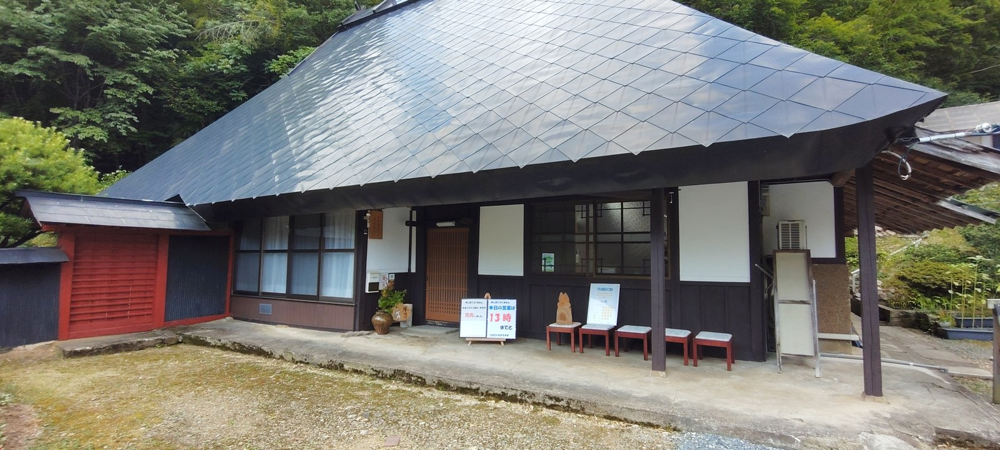
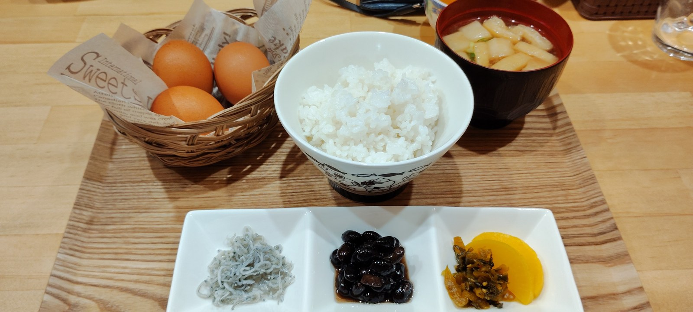
卵かけご飯は、卵もご飯もおかわりができました。おいしくて、私はご飯を2杯。卵は好きなだけいただけるとのことでしたが、今回は最初にかごに入っていた分で楽しみました。
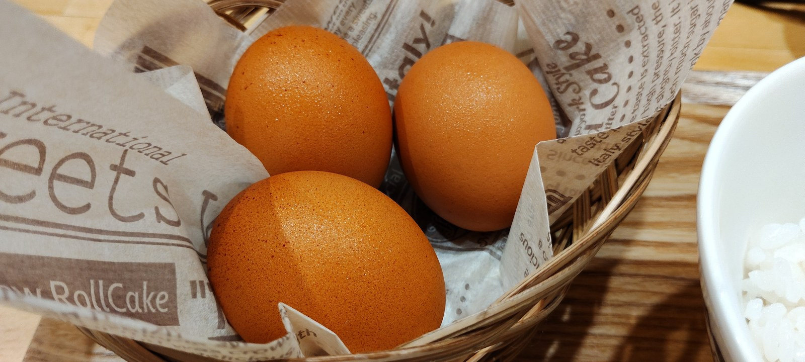
お値段も手頃に感じられて、お腹もしっかり満たされました。京丹波町観光協会の紹介でも、卵かけご飯の卵とご飯はおかわり無料と案内されています。提供内容は変わることもあるので、注文時にも確かめてください。
おかわりしたら、猫のお茶碗も変わりました
ご飯だけでなく、お茶碗もちょっとした楽しみでした。猫好きの店主さんで、お茶碗にも猫の絵柄。おかわりしたときには別の猫のお茶碗が出てきて、私は2種類に出会いました。
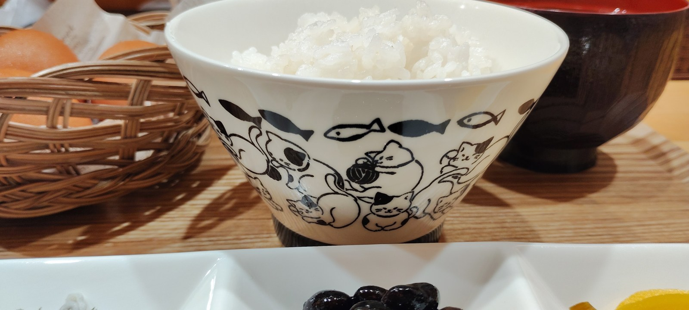
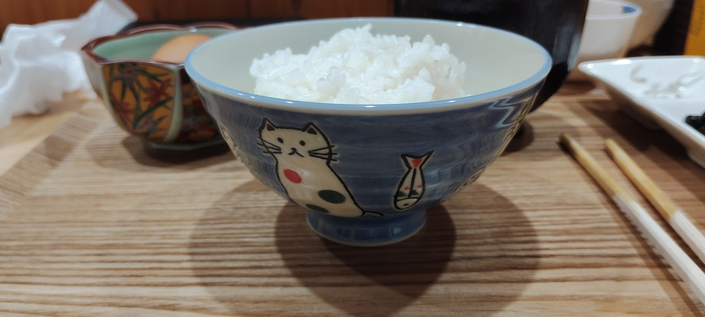
こういう小さな違いがあると、食事の記憶にも残りますね。卵かけご飯を味わいながら、お茶碗も見比べてしまいました。
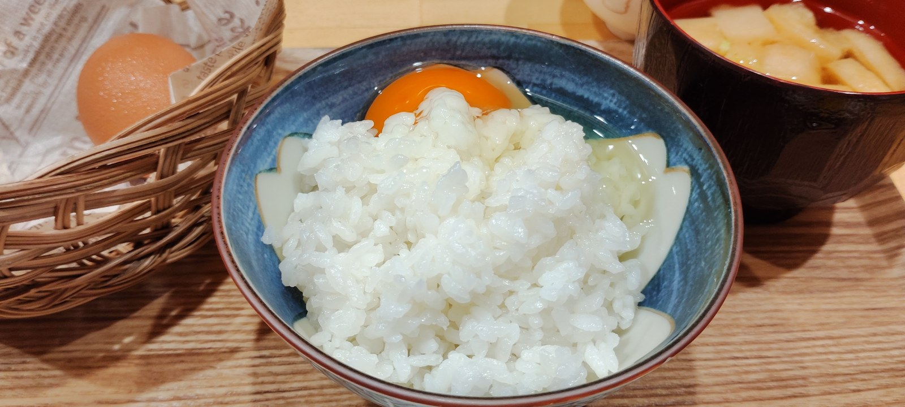
一緒に出かけた彼女は、うどん定食
彼女が選んだのは、うどん定食でした。こちらも写真に残しています。卵かけご飯だけでなく、別の食事を選べたのもよかったところです。
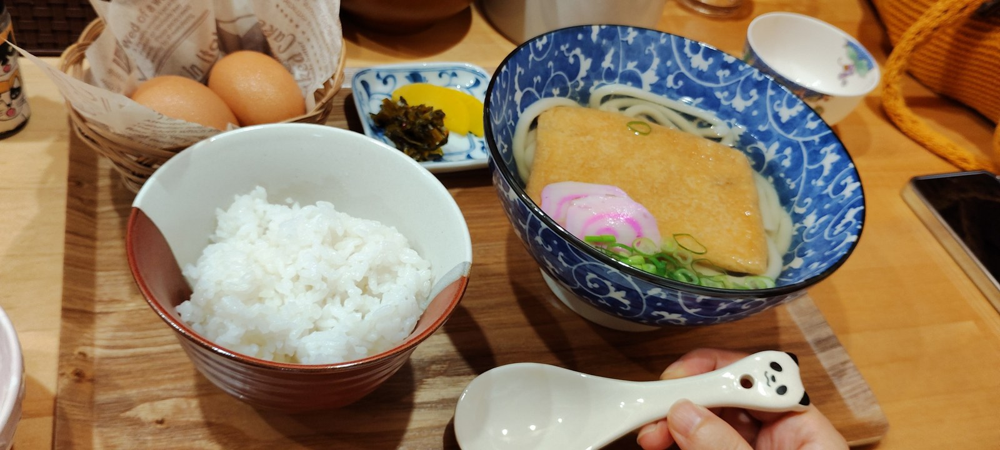
食事・器・サービスについては訪問時の体験です。現在のメニューや価格、おかわりの条件はお店でご確認ください。
訪問前に確認したい情報
質志鐘乳洞公園
- 所在地
- 京都府船井郡京丹波町質志大崩12−1
- 開園時間
- 9:00〜17:00（日帰り）
- 洞内見学受付
- 16:20まで。10月以降は16:00まで。混雑時は繰り上げる場合があります。
- 入園料
- 大人530円／3歳以上中学生以下310円
- 冬季
- 12月・3月は土日祝のみ。1〜2月は休園。
- 公式案内
- 京丹波町：質志鐘乳洞
洞内には天井の低いところや急な階段があります。動きやすい服装と滑りにくい靴で。雨の日や雨のあとは、特に足元に注意が必要です。
古民家きたむら
- 所在地
- 京都府船井郡京丹波町質志瀬戸ノ本68
- 営業案内
- 営業時間・営業日は変更される場合があります。訪問前にお店のInstagramで最新の案内をご確認ください。
- お店の案内
- 古民家きたむら Instagram
- 観光協会
- 京丹波町観光協会：古民家きたむら
施設情報の確認日：2026年9月23日。訪問時の体験とは分けて記載しています。
涼しい洞窟と、お腹を満たす寄り道
今回のドライブは、質志鐘乳洞で涼しさを味わって、帰りに古民家きたむらで卵かけご飯。洞内の急な階段も、猫のお茶碗も、写真と一緒に思い出に残るお出かけになりました。
今年これから出かけるなら営業日を確認して、夏の行き先を探しているなら来年の候補に。京丹波方面へのドライブで、こんな過ごし方もできました。
泊まりで京丹波を巡るなら
日帰りもいいですが、時間をとって周辺を巡りたい方には、京丹波で一泊する過ごし方もあります。宿泊先の候補のひとつが、道の駅「京丹波 味夢の里」に隣接する「フェアフィールド・バイ・マリオット・京都京丹波」です。
こちらは今回の宿泊体験の紹介ではなく、ドライブの拠点としてのご案内です。お部屋や設備、宿泊プラン、空室状況を確かめながら、旅の予定に合うか検討してみてください。
楽天トラベルでフェアフィールド京都京丹波を見る
上のボタンは楽天トラベルのアフィリエイト広告です。リンクを通じた予約・利用により、当サイトに報酬が入る場合があります。料金や空室は予約サイトで最新情報をご確認ください。
参考にした公式・観光情報
体験談・撮影：ろぶー。入口写真は、人物のプライバシー保護のため顔の一部にAI画像編集を使用しています。